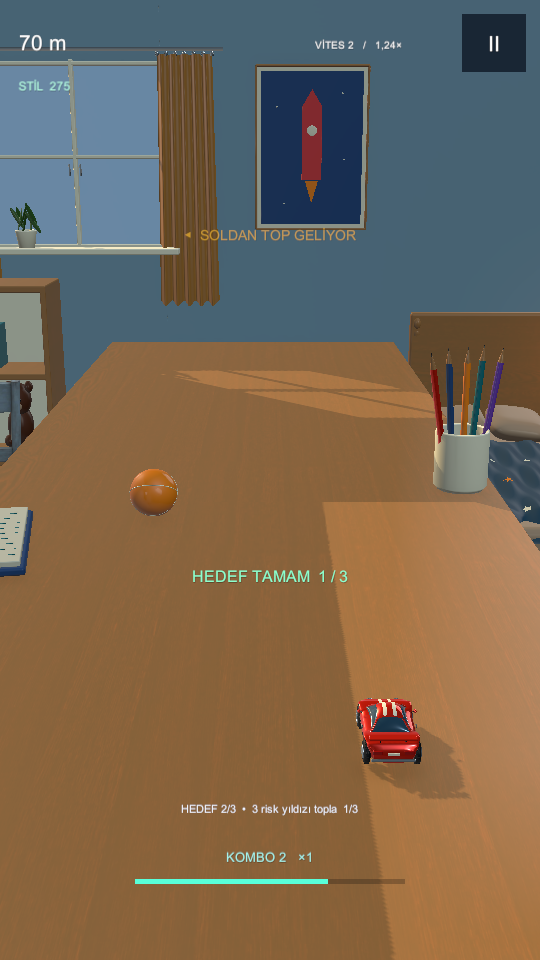
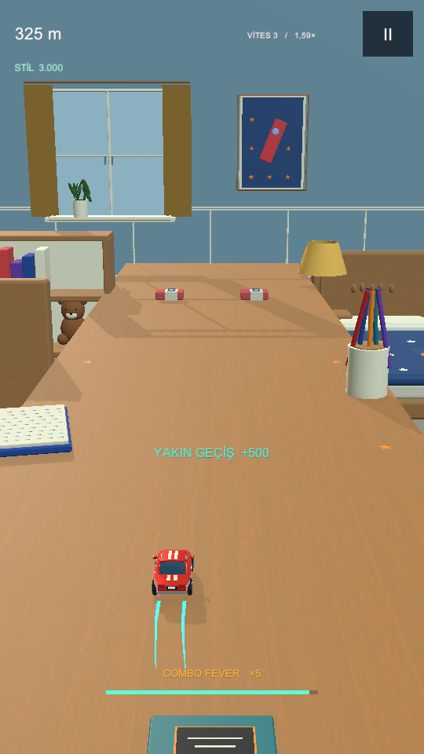
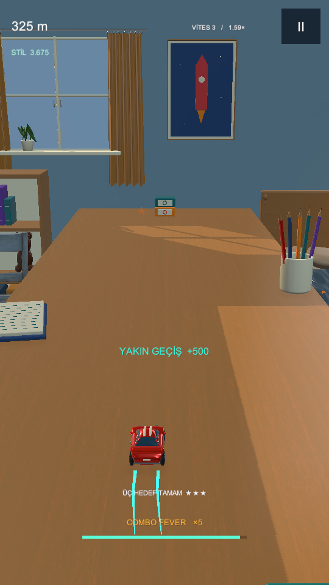
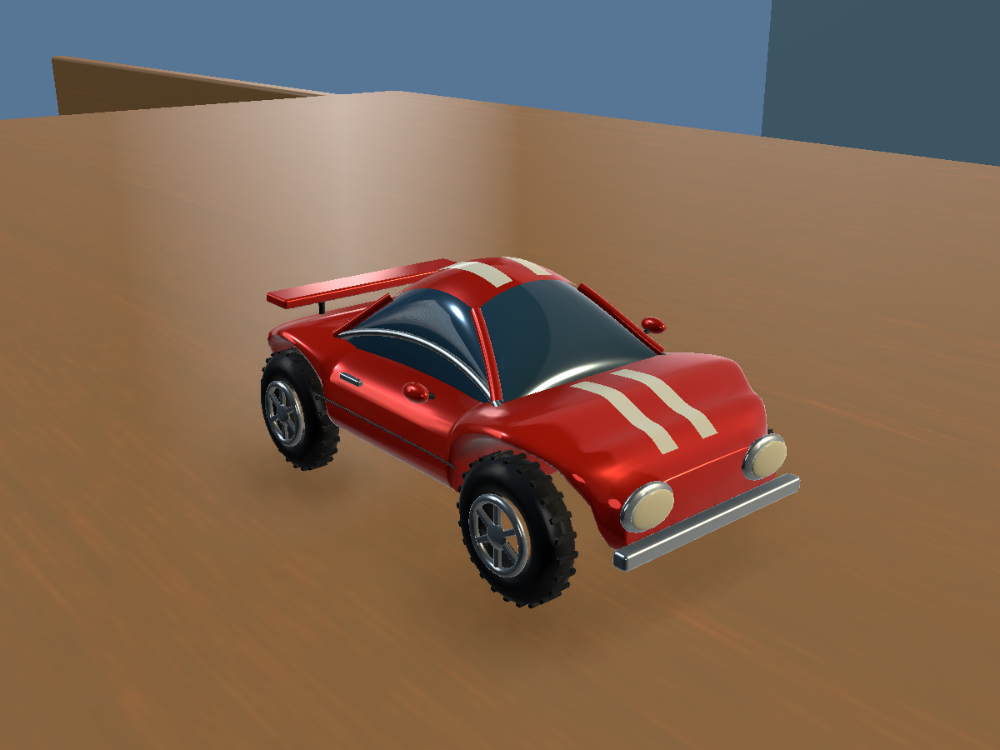
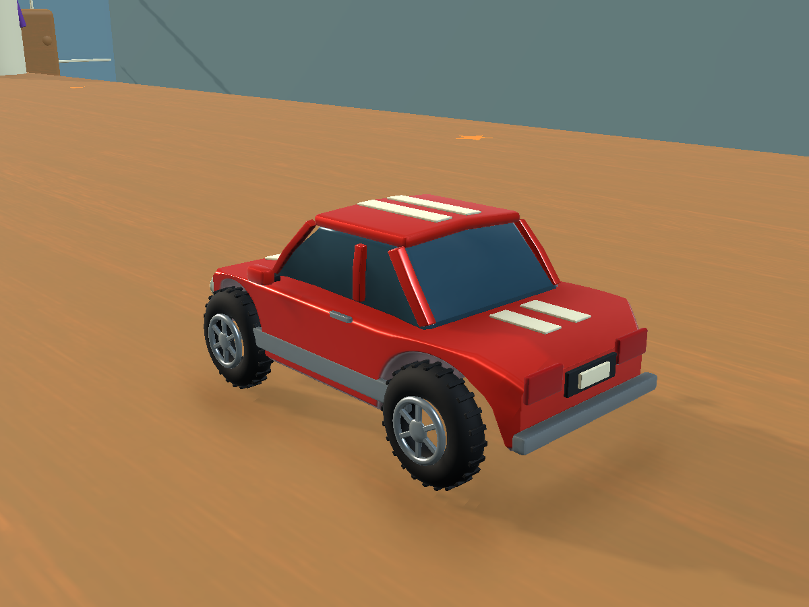
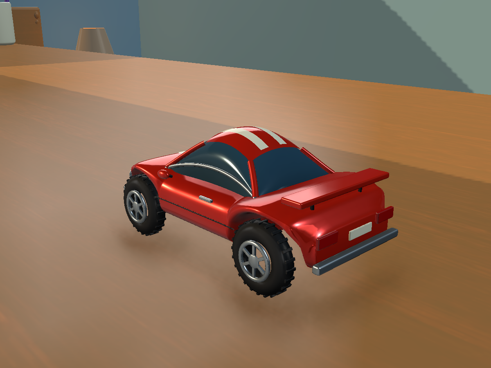
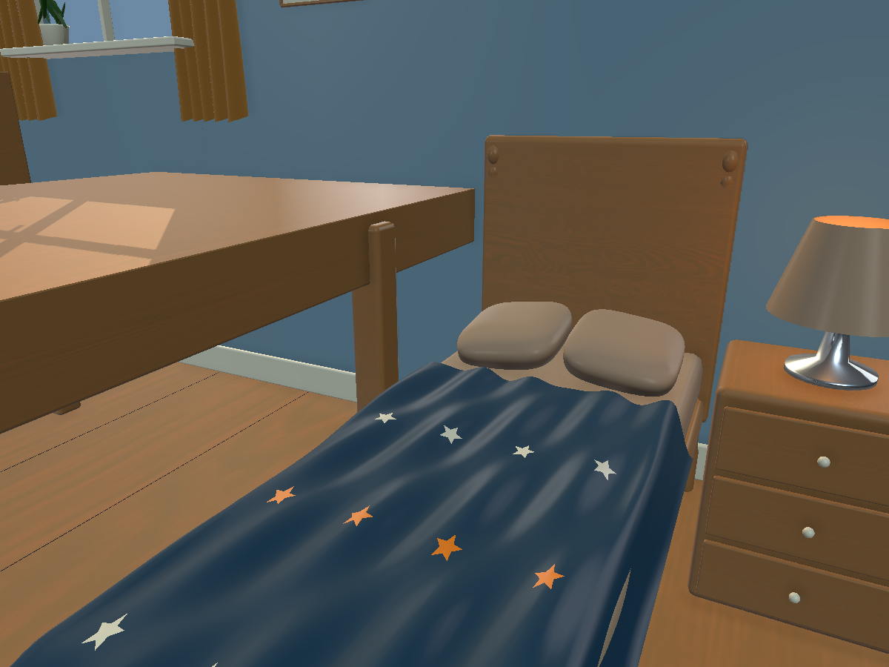

Konsept değil, gerçek 6.3 sn ve 24 sn riskli tanık sürüşleri. Puanlar oyunda kazanılır; sürümler arasında yıldız puanı nedeniyle doğrudan skor karşılaştırması yapılmaz. Fiziksel tablet performansı ve kullanıcı kalite kabulü bekler.








Ayrıntı kamerası oyun kamerasından farklıdır. Güncel açık eleştiriler: LIVING_MILESTONE.md.